| 设计题目 | 智巡 SmartOps —— 一体化智能运维巡检与自愈平台 |
| 系统代号 | SmartOps v2.0 |
| 设计者 | 王宇轩 |
| 完成日期 | 2026 年 10 月 15 日 |
| 技术形态 | B/S 架构 · 前后端分离 · 多租户 SaaS |
| 交付物 | 本设计报告（含系统需求、系统设计、H 图、界面原型、IPO 图）；配套演示 PPT |
随着企业业务系统规模扩大，一个中型研发团队的线上环境通常在三年内就会从十几台服务器膨胀到数百甚至上千个资源对象：既有自建机房的物理机与虚拟机，也有阿里云、腾讯云上的云主机，还有 Kubernetes 集群里的节点、中间件集群与各类数据库实例。运维工作方式往往还停留在"人盯屏幕"的阶段：值班同学每天要在七八套互不相通的控制台之间来回切换，靠经验判断哪台机器快要撑不住；巡检靠人工敲命令或临时脚本，结果散落在聊天记录里；出了告警先被海量重复通知淹没，再花大量时间定位到底是哪一层出了问题；同样的一次磁盘清理，每个值班的人都要重来一遍，经验无法沉淀。
从用户的视角看，运维团队真正需要的并不是"再多一个监控大屏"，而是一套能把发现问题—判断问题—处理问题—复盘问题串成闭环的平台。具体而言，运维管理员希望有一个统一的入口把所有异构资源纳管进来，用标签和分组管得住，而不是每次新增一批机器都要手工登记；值班工程师希望在告警到来时，看到的是已经归并降噪后的少量关键事件，并且系统能直接告诉他最可能的根因在哪里、历史上这类问题是怎么处理的；运维负责人则希望每周不用人工拼报表，就能拿到资源健康度、告警闭环率、自愈成功率这些可交付给管理层的数字。
| 角色 | 关注点 | 主要使用场景 |
|---|---|---|
| 运维管理员 | 资源覆盖率、规则与模板的正确性 | 接入新资源、维护巡检模板与告警规则、编排自愈剧本、管理用户权限 |
| 值班工程师 | 告警是否准确、处置是否可追溯 | 接收归并后的告警、查看根因推荐、执行处置动作、创建与流转工单 |
| 应用开发者 | 测试环境是否可用 | 在测试环境中自查资源状态、查看与自己服务相关的巡检结果 |
| 运维负责人 | 整体健康度、闭环效率与合规 | 查看总览大盘与报表、审批高危动作、审阅审计日志与 SLA 达成情况 |
系统面向上述角色，需要提供以下七类功能：
| 类别 | 指标要求 |
|---|---|
| 性能 | 纳管规模支持 5000 个资源对象；单次千节点巡检在 5 分钟内完成；指标写入吞吐 ≥ 5 万点/秒；告警从产生到通知送达 ≤ 3 秒。 |
| 可靠性 | 采集通道中断后自动降级为轮询模式，不丢指标；告警在聚合压缩过程中保留原始记录，任何降噪动作可追溯；核心服务无单点。 |
| 安全性 | 凭据统一由凭据库加密托管，不以明文落库与传输；高危动作（删除资源、执行自愈）需二次确认；操作全量留痕，审计日志不可篡改。 |
| 易用性 | 接入一个资源不超过 4 步向导；告警处理主路径不超过 2 次点击；关键界面支持深浅色与常用分辨率自适应。 |
| 可扩展性 | 采集插件、检测算法、通知渠道、自愈动作均以插件化方式注册，支持在不改动核心服务的前提下扩展。 |
智巡 SmartOps 采用分层架构，自上而下划分为用户层、应用层、支撑层、数据层与被管资源层五个层次。用户层是四类角色的统一入口；应用层由七个功能模块构成，是用户直接操作的部分；支撑层承载采集、调度、检测、归并、执行等公共能力，供应用层复用；数据层负责时序指标、关系数据、缓存、消息与文件的持久化；被管资源层是系统作用的客体，包括多云主机、K8s 集群、中间件、数据库与网络设备。各层之间通过明确定义的接口通信，上层依赖下层能力，下层不感知上层业务语义，从而保证任意一层可以独立替换或横向扩展。系统整体层次结构如图 2-1 所示。
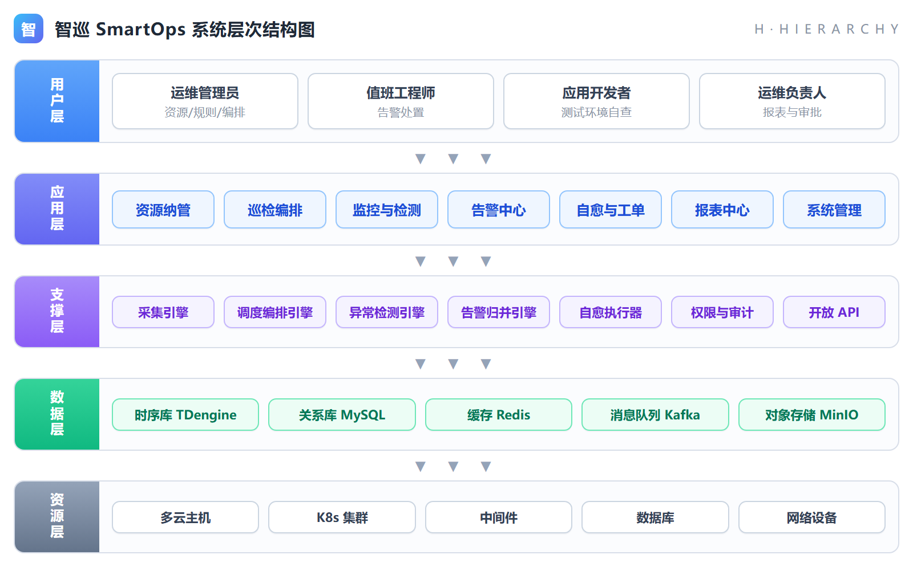
图 2-1 智巡 SmartOps 系统层次结构图（H 图）
| 编号 | 模块 | 主要子模块 | 职责概述 |
|---|---|---|---|
| 2.4 | 资源纳管 | 资源接入、资源清单与分组、资源详情与标签 | 统一纳管异构资源，维护资源台账、分组标签与依赖拓扑 |
| 2.5 | 巡检编排 | 巡检模板管理、DAG 流程编排、执行与调度 | 把巡检经验沉淀为可复用模板与流程，按计划批量执行 |
| 2.6 | 监控与异常检测 | 指标看板、异常检测、指标对比 | 采集并可视化时序指标，用多模型算法发现劣化趋势 |
| 2.7 | 告警中心 | 告警规则配置、告警列表、降噪与派单 | 由规则产生告警，做聚合抑制与分级派单，跟踪闭环 |
| 2.8 | 自愈与工单 | 自愈剧本、执行记录、工单看板 | 自动处置高频故障，失败转单并跟踪 SLA |
| 2.9 | 报表中心 | 报告任务、报告预览与导出、订阅推送 | 自动汇总巡检与告警数据，产出可交付报告 |
| 2.10 | 系统管理 | 用户、角色权限矩阵、租户、审计日志 | 多租户隔离、权限控制与操作留痕 |
本设计中的全部高保真界面原型均未使用图形软件手工绘制，而是采用"设计令牌 → HTML 组件 → 无头浏览器渲染截图"的 AI 辅助流水线生成。这样做的目的有三点：一是保证十余张界面之间视觉完全一致；二是原型本身即为可运行的前端结构，后续开发可直接复用；三是每张原型图的生成过程可复现、可微调。
生成流程。第一步，由 AI 根据系统需求确定设计令牌（Design Token），即颜色、圆角、间距、字号与状态色，并明确"深色运维控制台"这一视觉基调；第二步，生成一个共享样式表与一个页面外壳模板，外壳中包含侧边导航、顶部工具条与内容插槽，所有页面复用同一外壳；第三步，逐页生成内容片段，由构建脚本把外壳与片段拼装为完整 HTML；第四步，用无头 Chrome 在 1440×H 的视口、2 倍像素密度下渲染并截图，输出 PNG 供本报告引用；第五步，对截图进行人工复核，针对溢出、折行、层级不清等问题回到片段中定点修正后重新渲染。
核心提示词。为保证十余张界面风格统一，设计系统与页面生成分别使用如下提示词模板。
【提示词 1 · 设计系统】 你是资深 B 端产品设计师。为"智巡 SmartOps 智能运维平台"定义一套深色控制台设计令牌， 要求：专业、克制、信息密度高，避免玩具化与渐变堆叠。 输出内容：背景/面板/描边层级色值、主色与语义色（正常/警告/严重/信息）、 圆角与间距节奏、字号阶梯（11/12.5/13.5/17/26）、表格与卡片的统一内边距。 约束：状态色必须同时提供"色值 + 低透明度底色 + 同名描边"三件套，保证深浅背景下都可读。
【提示词 2 · 页面原型】
基于上述设计令牌，生成「{页面名称}」页面的 HTML 内容片段（不含 html/head/body 标签）。
页面定位：{一句话说明}。必须包含：{关键区域清单，如筛选区/主图表/明细表/侧栏属性面板}。
数据要求：使用贴近真实运维场景的示例数据（主机名、IP、指标值、告警级别），
表内数值与图表趋势必须自洽（例如磁盘 91% 应同时出现在详情页与告警页）。
布局约束：内容区固定 1440px 宽，禁止横向溢出；长表格使用紧凑字号（11.5px）与 nowrap。
输出仅需 HTML 片段，样式一律使用 design token 变量，不得硬编码颜色。
生成过程中的三次修正。第一次渲染后发现资源清单页表格列宽超出内容区导致右侧列被裁切，修正方式是压缩单元格内边距、缩短端点列文本并移除冗余操作列；第二次渲染发现健康度趋势图的纵轴刻度被绘图区压住，修正方式是缩小绘图区宽度并把刻度右移；第三次渲染发现 DAG 编排画布中的"失败重试"回边箭头指向了空白区域，判定其表达不清，改为删除该回边并在节点属性面板中以"失败策略"字段显式表达。上述三次修正说明：AI 生成的原型必须经过渲染后的人工复核，仅凭代码无法发现视觉层面的溢出与语义歧义。
资源纳管是整个平台的数据基础，它决定了后续巡检、监控与告警能否覆盖到正确的对象。本模块需要解决四个问题：一是接得进来，支持 SSH/Agentless、云账号同步与 CSV 批量导入三种接入路径，覆盖自建机房、公有云与容器环境；二是接得准，接入过程中必须完成端口可达性、凭据认证、系统信息读取与探针通道四项检测，任一环节失败即刻中断并给出可操作的原因；三是管得住，通过"分组 + 标签"两级维度组织资源，且分组与标签必须成为巡检与告警的作用范围选择依据，使得新增资源可以自动纳入既有策略；四是看得清，资源详情页需要把基础信息、运行指标、巡检记录、告警历史与依赖拓扑聚合在一个视图内，便于快速判断影响面。
资源纳管模块的整体界面如图 2-2 所示，页面由左侧分组树与右侧资源清单两部分构成。图中关键元素的注解如下：① 左侧资源分组树，按"环境 → 云/机房 → 资源类型"组织，每级显示资源计数，点击即筛选右侧清单；② 顶部筛选与标签区，支持按名称/IP/标签搜索，支持状态、类型下拉筛选，已选标签以独立标签块呈现；③ 健康度状态汇总条，实时显示异常、亚健康与健康的资源数量分布；④ 资源清单表格，逐列展示资源名称、类型、端点、所属分组、健康度进度条、状态、标签与最近巡检时间，健康度列使用颜色分档，异常行整体以浅红底色高亮；⑤ 底部批量操作与分页区，勾选资源后可批量发起巡检或批量打标签。
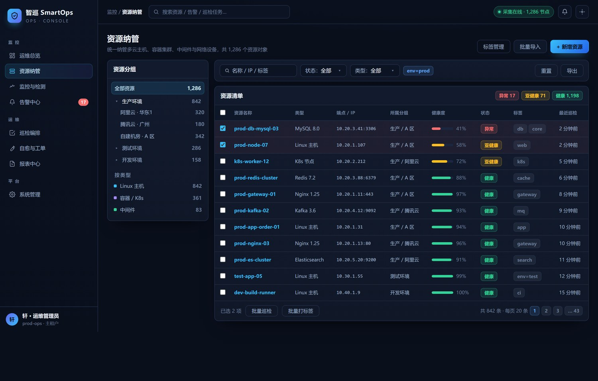
图 2-2 资源纳管模块整体界面（资源清单与分组树）
为便于查看表格细节，资源清单区域（含资源名称、类型、端点、所属分组、健康度与状态列）的局部放大如图 2-2a 所示，其中健康度列以进度条加数值双通道呈现，异常行以浅红底色整体高亮。
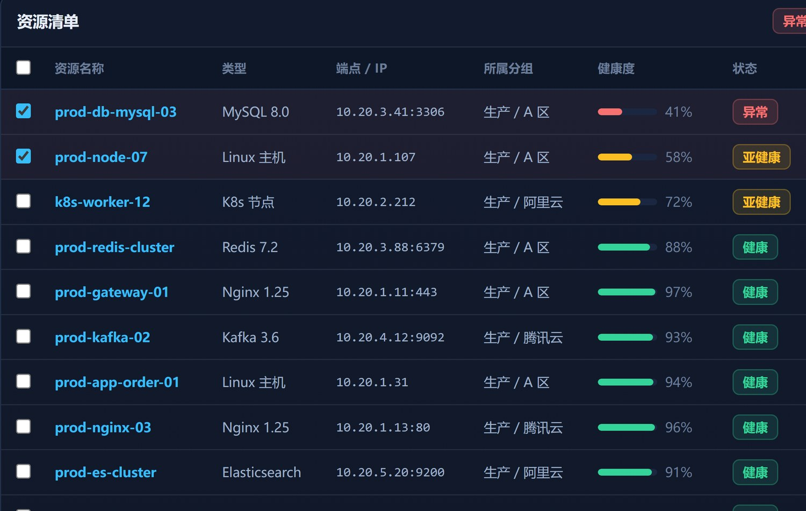
图 2-2a 资源清单区域局部放大
运维总览大盘作为资源纳管结果的统一呈现入口，如图 2-3 所示。图中关键元素：① 四张核心指标卡，分别展示纳管资源总数、系统健康度、今日巡检任务数与待处置告警数，并提供环比变化；② 系统健康度趋势图，以折线加面积方式展示近 24 小时健康度变化，并叠加健康基线参考线与异常时刻标注；③ 告警分级分布环形图，按 P1—P4 四个级别展示当日告警构成；④ 资源健康度排名表，按健康度升序排列，异常与亚健康资源排在最前；⑤ 实时事件流，按时间倒序推送自愈、告警、巡检完成与资源接入等事件。
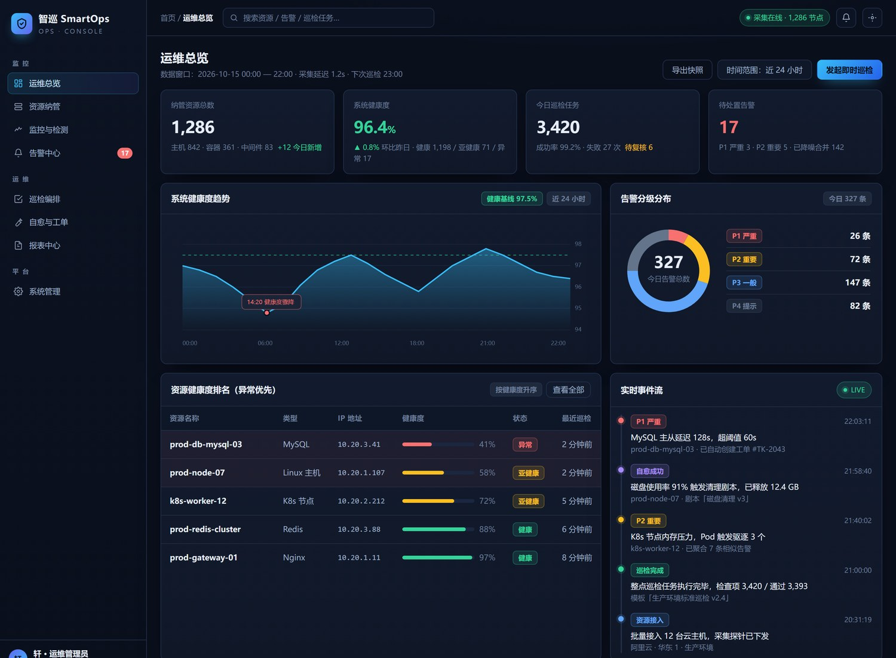
图 2-3 运维总览大盘
大盘中系统健康度趋势图的局部放大如图 2-3a 所示：绿色虚线为健康基线参考线，蓝色折线为实际健康度，图中 14:20 处的红点与文字标注为自动识别出的健康度骤降时刻。
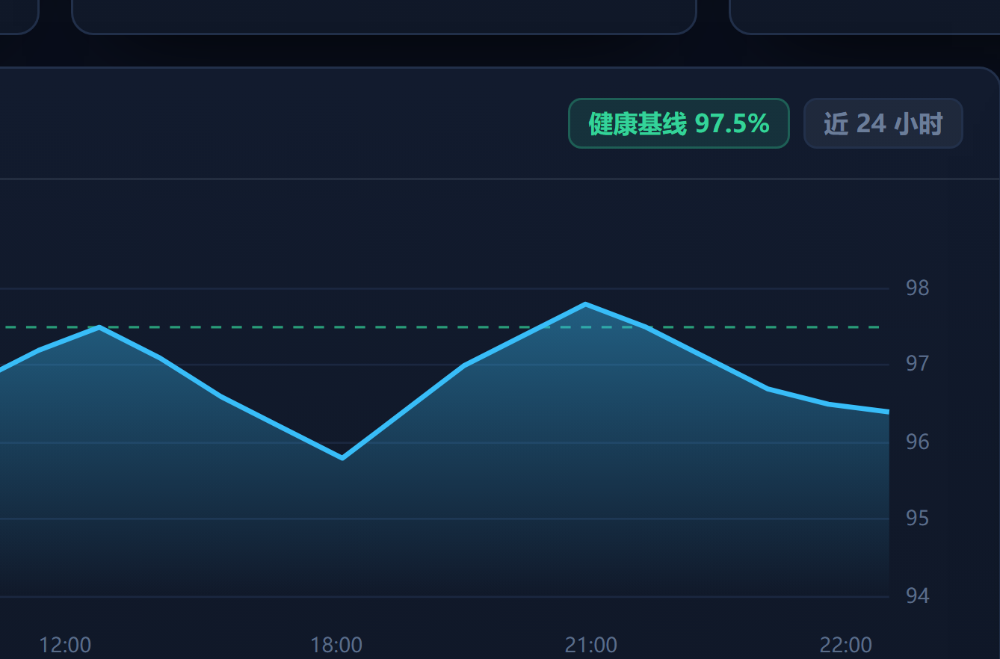
图 2-3a 系统健康度趋势图局部放大
功能描述。资源接入是一个四步向导：选择接入方式 → 配置连接信息 → 配置采集策略 → 完成。在配置连接信息步骤中，用户可以填写资源名称、类型、管理 IP、端口、认证方式、凭据库引用、所属分组与标签，并可填写接入备注。系统在用户点击"连通性测试"后依次执行 TCP 端口可达性、SSH 身份认证、系统信息读取、sudo 特权指令可用性与探针下发通道五项检测，并把每一项的结果与耗时返回展示。若探针通道不可达，系统自动把该资源的采集模式降级为 SSH 定时轮询，保证数据不中断。此外，向导右侧同时提供批量接入入口，支持拖拽 CSV 或直接同步云账号下的全部实例。
页面及原型。接入向导界面如图 2-4 所示。图中关键元素：① 顶部四步进度条，已完成、当前与待办状态用不同样式区分；② 左侧连接信息表单区，含资源名称、类型、IP、端口、认证方式、凭据库引用、分组与标签等字段；③ 表底下方的操作区，提供"上一步""连通性测试""下一步"三个动作；④ 右侧连通性与探针检测结果卡，逐项列出检测结论与耗时，全部通过时给出汇总提示；⑤ 右下批量接入区，支持 CSV 拖拽上传与云账号实例同步。
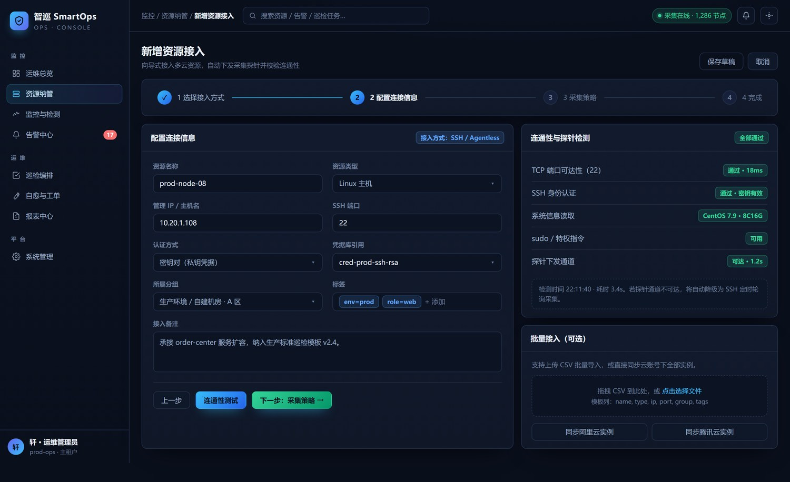
图 2-4 资源接入向导（子模块界面原型）
IPO 图。资源接入子模块的输入、处理与输出关系如图 2-5 所示。
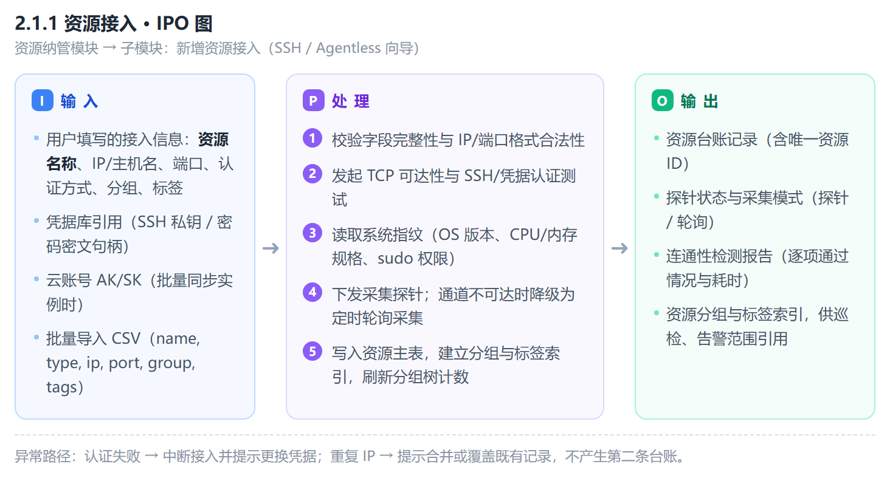
图 2-5 资源接入子模块 IPO 图
功能描述。资源详情页是单资源的信息聚合视图，顶部展示资源名称、类型、端点、分组与标签，并以环形图给出健康度评分；下方以页签形式组织"概览、指标监控、巡检记录、告警历史、依赖拓扑、配置与凭据"六类信息。概览页签包含 CPU、内存、连接数、主从延迟等关键指标的数值卡与迷你趋势图，以及一张基本信息表；依赖拓扑页签基于近 24 小时的调用链与复制关系自动推断上下游关系，用于在资源异常时快速评估影响面。标签管理支持单个资源的标签增删与批量打标，任何标签与分组的变更都会写入审计日志。
页面及原型。资源详情界面如图 2-6 所示。图中关键元素：① 头部资源标识区，含健康度环形图、资源名称、版本、端点、分组与标签；② 右上角动作区，提供"查看原始指标""变更记录""立即巡检"三个入口；③ 页签栏，切换概览、指标、巡检记录、告警历史、依赖拓扑与配置凭据；④ 四个关键指标卡，每张含当前值、迷你趋势折线与阈值说明，超阈值的指标用语义色标出；⑤ 基本信息与运行状态表；⑥ 依赖与调用拓扑图，当前节点以高亮框标出，上下游以箭头连接。
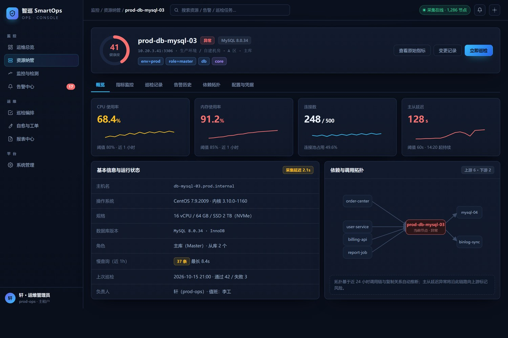
图 2-6 资源详情与依赖拓扑（子模块界面原型）
IPO 图。资源详情与标签管理子模块的输入、处理与输出关系如图 2-7 所示。
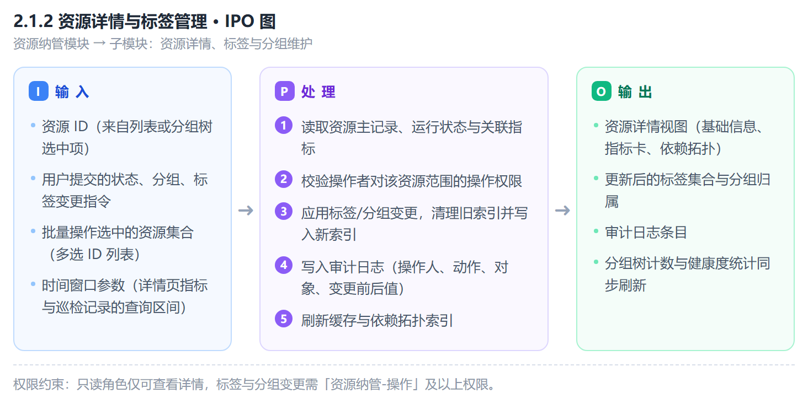
图 2-7 资源详情与标签管理子模块 IPO 图
巡检编排模块负责把运维人员的经验固化为可复用、可调度、可追溯的执行单元。其功能需求包括：模板化，把检查项及其判定条件、权重、告警级别、是否必检等配置打包成模板，同一模板可被成百上千个资源复用；参数化，模板通过分组与标签动态匹配资源范围，使得新增资源无需修改模板即可自动纳入巡检；可编排，对于复杂巡检场景（例如需要先采集再分析、需要多分支并行执行），提供可视化画布，支持采集、脚本执行、并行网关、条件判定、告警触发与报告生成等节点，支持节点级并发度、超时与失败重试配置；可验证，流程发布前必须经过语法校验与试运行，避免把错误流程推送到生产环境；可追溯，模板与流程均需版本化，执行结果需要能够回溯到当时的配置口径。
巡检模板管理界面如图 2-8 所示。图中关键元素：① 顶部模板卡片行，每张卡片显示模板名称、版本、检查项数量、适用资源台数与调度周期，当前选中的模板以高亮描边标出；② 模板基本参数区，展示调度周期、并发度、超时时间与失败重试策略；③ 检查项配置表，逐行列出检查项名称、采集方式、判定条件、权重、级别与是否必检，支持拖拽排序；④ 右侧关联资源卡，按分组层级展示模板实际命中的资源台数；⑤ 最近执行记录表，按时间倒序展示每次执行的通过项数与结果状态。
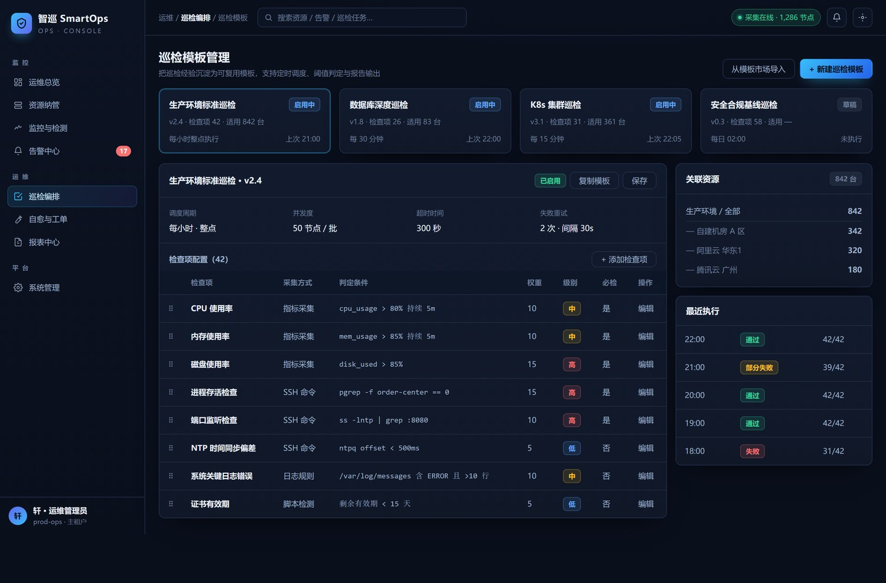
图 2-8 巡检模板管理（整体界面原型）
功能描述。模板管理提供模板的增删改查、启用停用、复制与版本对比能力。新建模板时需要填写调度周期（支持 cron 表达式与可视化周期）、并发度、超时时间与失败重试策略；随后在检查项配置表中逐条添加检查项，每条检查项需指定采集方式（指标采集/SSH 命令/日志规则/脚本检测）、判定条件表达式、权重与告警级别。系统在保存前会校验判定条件的语法与阈值合法性，并把模板关联的资源范围解析为实际命中清单，展示给用户确认。
页面及原型。本子模块的界面即图 2-8 所示页面，其中②③④⑤四个区域分别为模板参数、检查项配置、关联资源与执行记录。
IPO 图。巡检模板管理子模块的输入、处理与输出关系如图 2-9 所示。
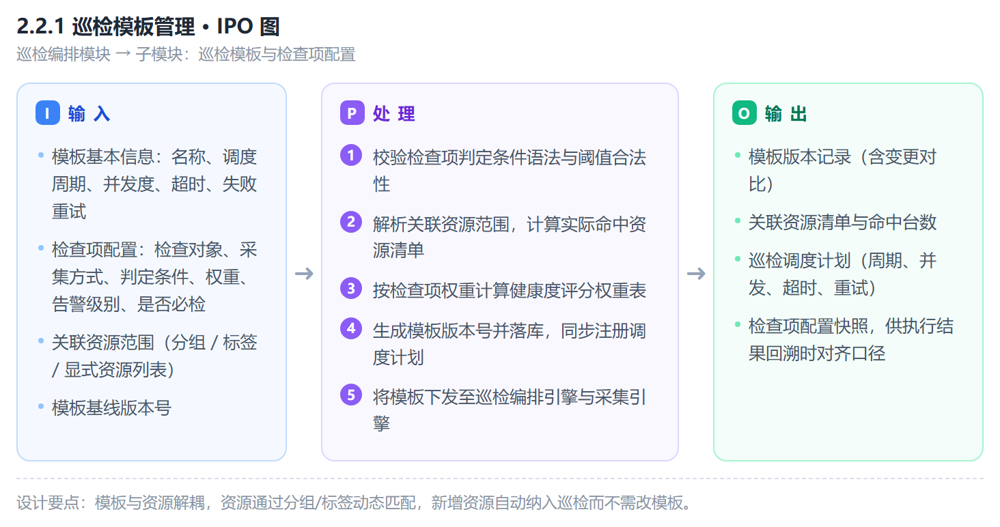
图 2-9 巡检模板管理子模块 IPO 图
功能描述。对于"先采集、再分组检查、最后按结果分流"这类带分支的巡检场景，模板化的线性检查项不足以表达，因此提供可视化 DAG 编排画布。画布左侧为节点面板，提供采集节点、脚本执行、并行网关、条件判定、告警触发与报告生成六类节点；中间为流程画布，支持拖拽放节点、连线、缩放与平移；右侧为节点属性面板，可配置节点名称、执行资源范围、脚本内容、超时、并发度、失败策略与输出变量。系统在发布前执行三项校验：节点必填项与脚本非空校验、环路检测与拓扑排序、变量作用域校验（下游只能引用上游已声明的变量）；校验通过后还可对抽样资源做干跑试运行，确认无误后再发布为版本。
页面及原型。DAG 编排画布如图 2-10 所示。图中关键元素：① 左侧节点面板，列出六类可拖拽节点，当前选中的节点类型以高亮标出；② 流程画布，以"开始 → 拉取资源清单 → 并行网关 → 四路并行检查 → 汇聚 → 异常判定 → 报告/告警分支 → 结束"的方式表达执行拓扑，选中的数据库检查节点以虚线框标出；③ 画布右上角校验状态与缩放指示；④ 右侧节点属性面板，展示当前选中节点的脚本内容、执行范围、超时、并发、失败策略与输出变量；⑤ 节点面板底部的操作提示。
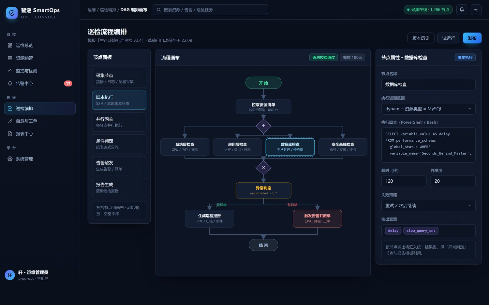
图 2-10 巡检 DAG 流程编排画布（子模块界面原型）
流程画布的局部放大如图 2-10a 所示，可清晰看到并行网关（＋）与汇聚节点（×）的分支关系，以及四条并行检查分支如何汇聚后进入异常判定节点。
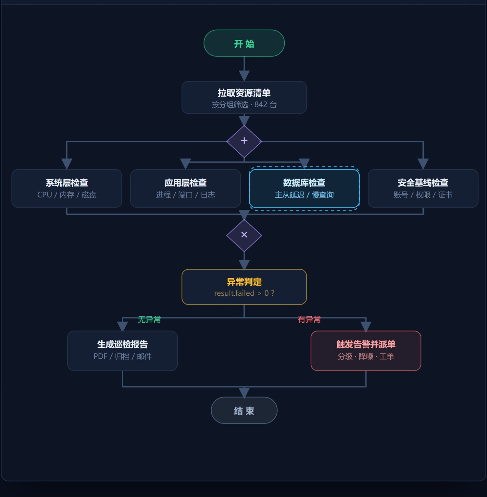
图 2-10a 巡检流程画布局部放大
IPO 图。DAG 流程编排子模块的输入、处理与输出关系如图 2-11 所示。
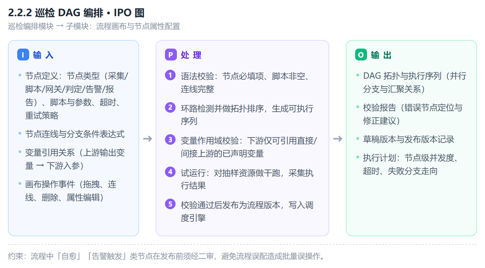
图 2-11 DAG 流程编排子模块 IPO 图
监控与异常检测模块的目标是"把问题发现在告警之前"。功能需求包括：按资源与指标维度采集并展示时序数据，支持多资源对比；提供固定阈值的静态判定，用于磁盘、连接数这类稳定型指标；提供基于滑动指数加权平均（EWMA）的动态基线，使判定阈值随业务周期漂移，规避业务高峰期的静态误报；提供孤立森林等无监督算法，用于捕捉"单指标正常但组合异常"的隐性劣化；对检测结果做毛刺过滤，要求异常持续一定时长才输出，抑制瞬时抖动；异常结果可直接联动告警规则或自愈剧本，形成"检测—告警—处置"链路。
指标监控与异常检测界面如图 2-12 所示。图中关键元素：① 资源与指标选择条，可切换被观察资源、指标、聚合口径与时间范围；② 主指标趋势图，橙色实线为实际指标，浅蓝色带为动态基线区间，异常点分别以红色与黄色圆点标出，并给出异常时刻的文字标注；③ 图例区，说明实际指标、基线区间、严重异常点、预警点与异常聚集窗口；④ 同资源其他指标卡，横向列出该资源其余指标的当前值与状态，便于关联判断；⑤ 检测算法说明卡，解释三类算法的适用场景；⑥ 右侧异常检测配置面板，含算法选择、灵敏度滑块、训练窗口、最小持续时长与异常联动动作；⑦ 右下检测结果列表，按时间倒序列出每条异常的级别、时刻、描述与持续时长。
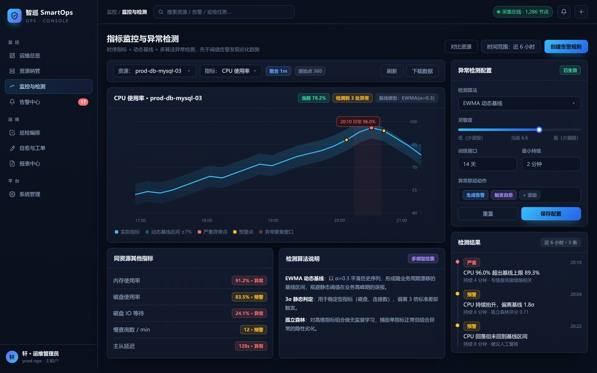
图 2-12 指标监控与异常检测（整体界面原型）
主指标趋势图的局部放大如图 2-12a 所示。浅蓝色带为 EWMA 动态基线区间，橙色实线为实际指标，红色与黄色圆点分别表示严重异常与预警，右侧红色阴影区为异常聚集窗口。
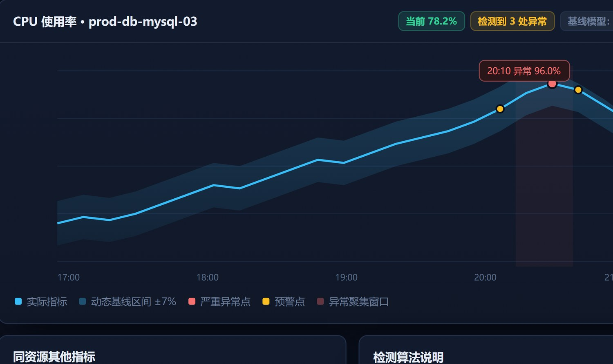
图 2-12a 主指标趋势与异常标注局部放大
功能描述。异常检测子模块负责模型的配置与结果输出。用户需要选择检测算法（EWMA / 3σ / 孤立森林）、调整灵敏度、设定训练窗口与最小持续时间，并指定异常命中后的联动动作。系统在处理时先拉取时序数据并做缺失值插补与毛刺清洗，再训练或增量更新基线模型，然后逐点计算偏离度与异常评分，按最小持续时间过滤瞬时抖动，最后输出异常点列表与聚集窗口，并触发既定的联动动作。用户可在图上直接观察判定是否正确，并通过灵敏度滑块即时看到结果变化。
页面及原型。本子模块的界面即图 2-12 所示页面，其中②③为检测结果的图形化呈现，⑥⑦为配置与结果列表。
IPO 图。指标异常检测子模块的输入、处理与输出关系如图 2-13 所示。
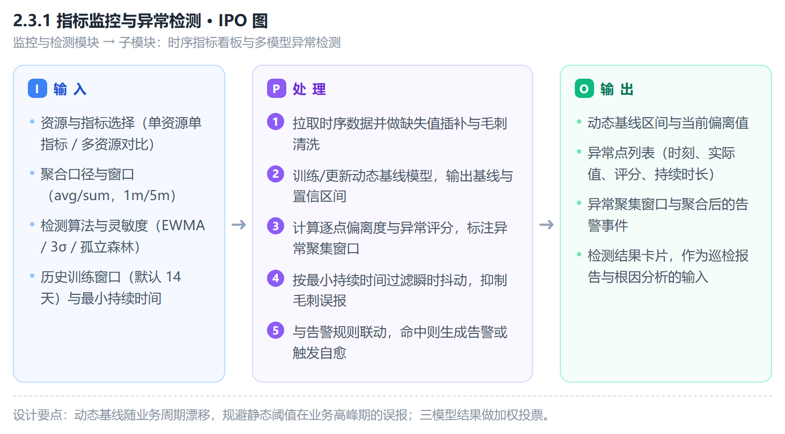
图 2-13 指标异常检测子模块 IPO 图
告警中心要解决的核心矛盾是"信号太少怕漏、信号太多怕淹"。功能需求包括：以条件表达式或可视化构造器配置告警规则，条件需支持指标名、比较运算、阈值与持续时间；规则需支持作用范围（资源类型/标签/分组）、取值口径与评估周期；发布前需支持命中预演，用历史数据回放估算触发频次，避免上线即告警风暴；对产生的原始告警做聚合抑制，包括按资源聚合、按规则聚合、按依赖拓扑抑制（上游故障时降级下游告警）与维护窗口静默；按值班表自动派单并推送通知，未在规定时间内确认则逐级升级；保留完整的降噪轨迹，任何被合并的告警都能在详情中回溯。
告警中心列表界面如图 2-14 所示。图中关键元素：① 顶部四张统计卡，分别展示 P1、P2 活跃告警数、已自动恢复数以及近 24 小时的降噪压缩率；② 状态页签栏，按活跃、全部、已确认、已恢复、已静默分类；③ 级别筛选块，以彩色标签展示各告警级别的数量；④ 告警明细表格，逐列展示级别、告警标题、资源、触发值与阈值、持续时长、聚合条数、状态、处理人与操作入口；⑤ 底部批量操作区，支持批量确认、批量派单与临时静默，并显示当前筛选条件。
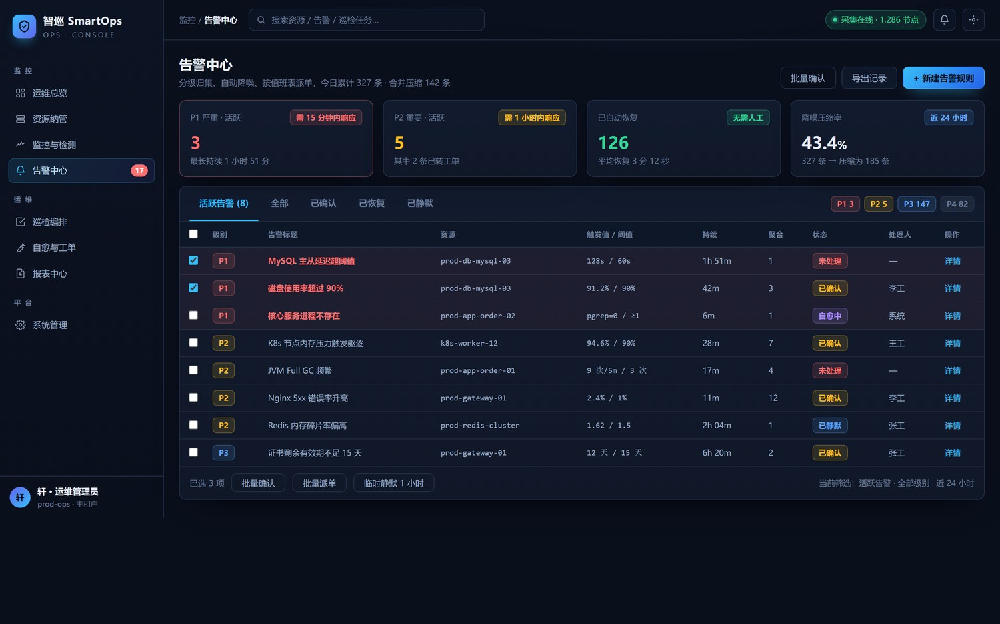
图 2-14 告警中心列表（整体界面原型）
告警明细表的局部放大如图 2-14a 所示。表格以紧凑字号承载十列信息，级别用彩色标签、状态用语义色区分，聚合列显示该条主告警已合并的原始告警条数。
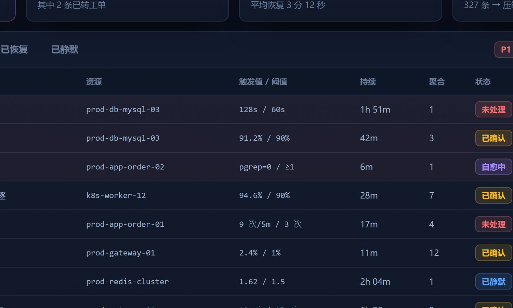
图 2-14a 告警明细表局部放大
功能描述。规则配置子模块提供规则的列表管理与详情编辑。规则详情分为四块：规则元信息（名称、类型、级别）、作用范围与取值口径、触发条件、聚合抑制与通知升级。触发条件支持"表达式模式"与"可视化模式"两种编辑方式，表达式模式下用户可以直接书写形如 avg(mysql_slave_delay_seconds[1m]) > 60 and duration >= 3m 的条件，系统实时校验语法；可视化模式下用户通过下拉框与输入框组合出同等条件。规则还需配置恢复条件、首次触发延迟与每小时最大触发次数，以避免抖动型告警反复打扰。
页面及原型。告警规则配置界面如图 2-15 所示。图中关键元素：① 左侧规则列表，按今日命中次数排序，当前编辑的规则高亮显示；② 规则元信息区，含规则名称、类型、级别、作用范围、取值口径与评估周期；③ 触发条件构造器，支持表达式与可视化相互切换，并以代码形式回显最终表达式；④ 恢复条件与频次限制区；⑤ 聚合与抑制开关区，含按资源聚合、按规则聚合、依赖拓扑抑制、维护窗口抑制与风暴抑制；⑥ 通知与升级区，配置通知渠道、通知对象与升级策略。
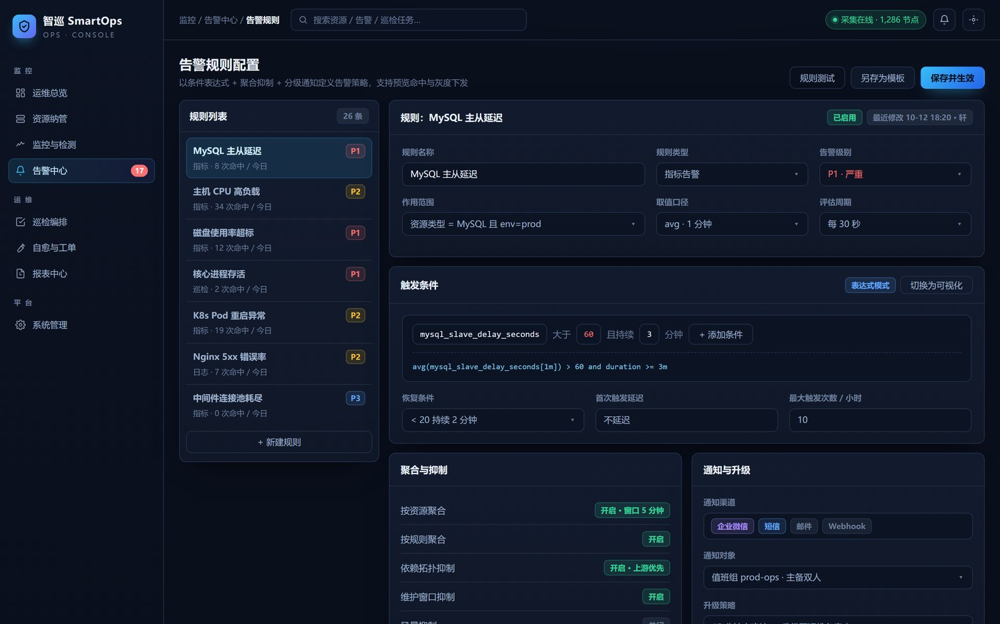
图 2-15 告警规则配置（子模块界面原型）
IPO 图。告警规则配置子模块的输入、处理与输出关系如图 2-16 所示。
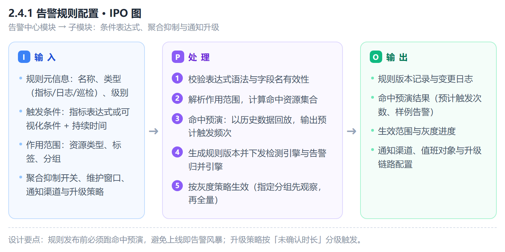
图 2-16 告警规则配置子模块 IPO 图
功能描述。降噪与派单子模块是告警进入系统后的核心处理环节。当一条原始告警入队后，系统依次执行：相似度计算与窗口聚合、依赖拓扑抑制、维护窗口静默判定、按值班表分配处理人并推送通知、超时未确认则按升级链路逐级上报。整个链路的每一步都会写入告警时间线，用户可以在告警详情中看到"触发—聚合—通知—自愈—升级"的完整经过。同时，系统给出基于拓扑关联分析的根因推荐，把与当前告警相关性最高的指标排在前面，并附上处置建议与不建议执行的动作。
页面及原型。告警详情与降噪界面如图 2-17 所示。图中关键元素：① 头部告警信息区，含级别、状态、聚合条数、首次触发时间、持续时间与当前值/阈值对比，右侧为"确认接管""转工单""静默""误报标记"四个处置入口；② 告警时间线，按时间顺序记录触发、聚合、通知送达、自愈执行与升级提醒；③ 关联指标快照，以四宫格呈现触发时刻的关键指标值；④ 根因推荐卡，给出疑似根因、置信度与判定依据，并附处置建议；⑤ 聚合的相似告警列表；⑥ 降噪命中详情，逐条说明哪些抑制规则被命中。
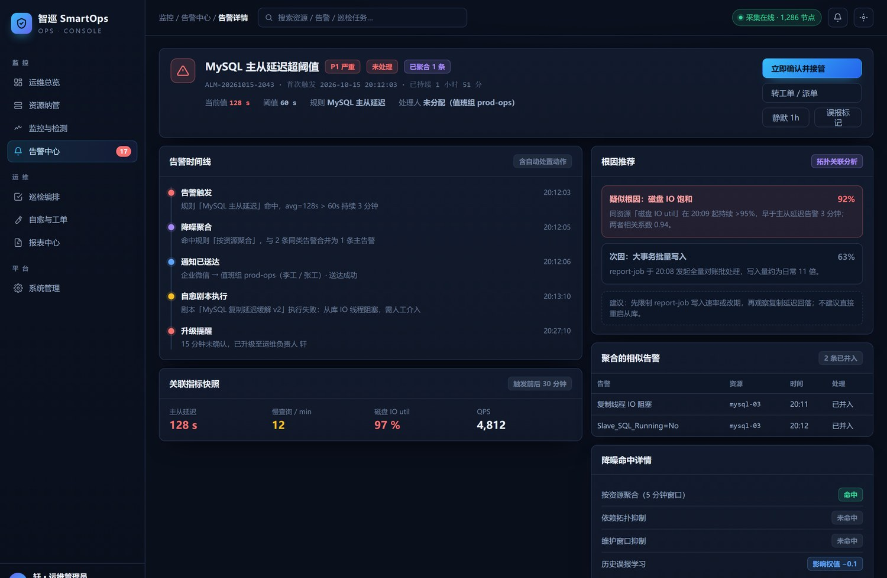
图 2-17 告警详情与降噪追溯（子模块界面原型）
IPO 图。告警降噪与派单子模块的输入、处理与输出关系如图 2-18 所示。
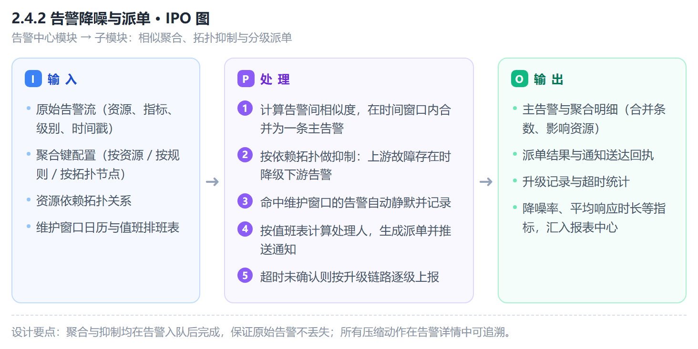
图 2-18 告警降噪与派单子模块 IPO 图
自愈与工单模块把"重复性的处置动作"自动化，把"无法自动化的部分"流程化。功能需求包括：以剧本形式定义触发条件与动作序列，条件可组合告警级别、规则、资源标签与变更冻结期；动作序列支持采集、清理、重启、扩容、校验等动作，每个动作可单独配置参数、超时与失败处理策略；设置安全阈值（如单次释放空间上限、并发执行上限），超过阈值时转为人工确认；执行过程中逐步采集结果与指标变化，最后校验目标指标是否回落至安全区间，成功则关闭告警形成闭环，失败则自动转为人工工单；所有执行记录与工单流转均可追溯，并统计 SLA 达成率。
自愈剧本界面如图 2-19 所示。图中关键元素：① 左侧剧本库，列出各剧本的启用状态、触发次数与成功次数；② 剧本触发条件区，以条件块串联方式展示告警级别、规则、资源标签与变更冻结期等约束；③ 动作序列表，逐行定义动作、执行目标、参数、超时、失败处理与状态，体现"采集明细 → 清理 → 校验水位 → 复核关闭"的处置逻辑；④ 底部安全策略与操作区，展示释放空间上限、并发上限，并提供干跑验证与保存入口；⑤ 最近执行记录表，含告警单号、资源、耗时、结果与释放空间等效果数据。
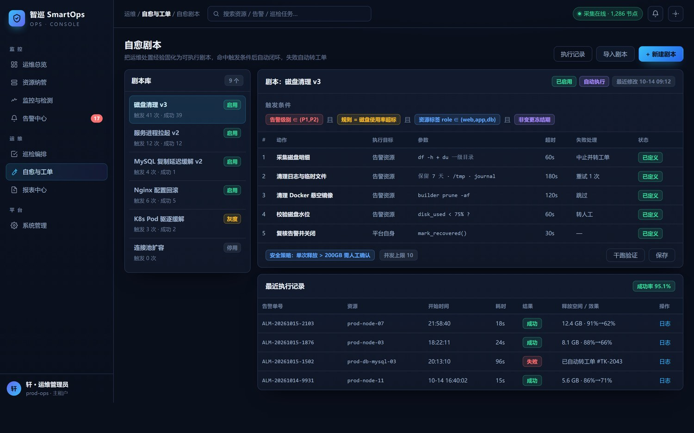
图 2-19 自愈剧本与执行记录（整体界面原型）
工单看板界面如图 2-20 所示。图中关键元素：① 顶部四张统计卡，展示今日新建工单数、平均响应时长、平均闭环时长与超时未闭环数；② 待分配列，展示尚未指派处理人的工单及其等待时长，超时工单以红色文字提示；③ 处理中列，工单卡片内含处理进度条处理人信息，SLA 临界卡片以黄色描边高亮；④ 待验证列，展示已处置待观察的工单；⑤ 已关闭列，展示已闭环工单及其 SLA 达成标记。
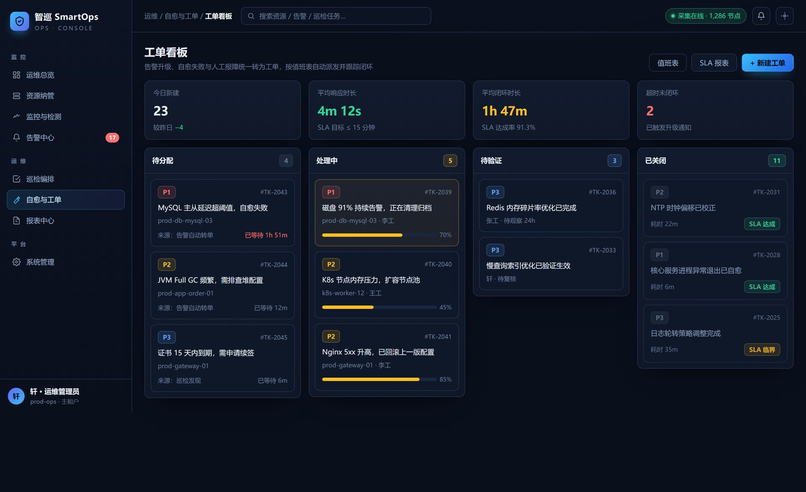
图 2-20 工单看板（整体界面原型）
功能描述。剧本编排子模块负责剧本的定义、校验与执行。定义阶段，用户配置触发条件与动作序列；校验阶段，系统检验动作参数合法性与执行目标的可用性，并支持干跑验证（仅采集不实际执行破坏性动作）；执行阶段，系统按序执行动作，每一步采集执行结果与指标变化，失败时按配置重试或跳过，并在触发安全阈值时暂停转人工；闭环阶段，校验目标指标是否恢复，成功则关闭告警并记录效果数据，失败或超阈值则自动创建人工工单并附带执行日志。
页面及原型。本子模块的界面即图 2-19 所示页面，其中②③④分别为触发条件、动作序列与安全策略配置区。
IPO 图。自愈剧本编排子模块的输入、处理与输出关系如图 2-21 所示。
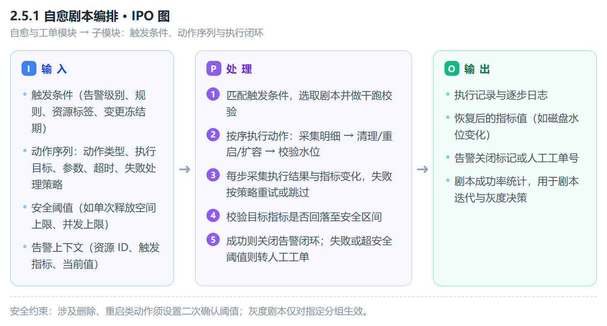
图 2-21 自愈剧本编排子模块 IPO 图
报表中心把分散在巡检、告警与工单中的过程数据汇总为可交付的结论性材料。功能需求包括：支持配置报告任务，指定报告类型（巡检日报、运维周报、告警闭环分析、SLA 月报）、生成周期、输出格式（PDF/Excel）与推送渠道；报告内容需要包含核心指标概览、趋势图表、隐患资源清单与处置建议；支持历史归档与按需重新生成；报告中涉及的 AI 分析结论必须显式标注为"仅供参考，处置动作须经人工确认"，以明确人与系统的责任边界。
报表中心界面如图 2-22 所示。图中关键元素：① 左侧报告任务列表，展示任务名称、输出格式与生成周期，首项为当前预览的任务，下方为历史归档；② 报告预览头部，含报告标题、统计区间、生成人与页数，并提供重新生成与下载入口；③ 核心指标概览区，以四宫格展示巡检执行量、发现隐患数、告警总数与自愈成功率；④ 告警趋势图，以柱状图叠加 P1 趋势虚线呈现近 7 日变化；⑤ TOP 隐患资源表，列出资源、隐患项、级别、建议处置与当前状态；⑥ 报告尾部的免责与口径说明。
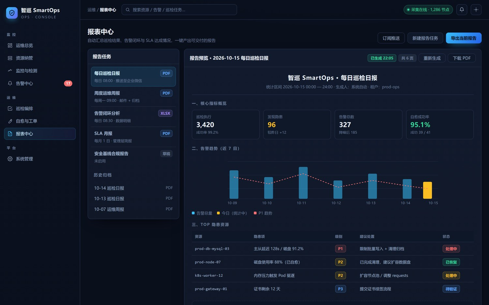
图 2-22 报表中心与报告预览
系统管理模块提供平台的治理能力。功能需求包括：多租户隔离，保证不同租户的资源与数据互不可见；用户管理，支持与企业微信通讯录同步实现组织架构自动更新，支持启用、停用与恢复账号；角色权限采用功能级（查看/操作/配置/审批）与资源级（按分组或标签限定作用范围）两级模型，并支持内置角色与自定义角色；高危操作默认需要二次确认；提供全量审计日志，记录操作人、动作、对象、时间与结果，且日志不可被普通用户修改。
系统管理界面如图 2-23 所示。图中关键元素：① 左侧用户列表，按姓名、账号/企业微信、角色、资源范围、状态与最近登录时间展示，停用账号以灰色标识；② 用户列表底部的企业微信同步提示与统计；③ 右上角色权限矩阵，以"功能模块 × 查看/操作/配置/审批"的矩阵形式展示权限分配；④ 权限矩阵下方的高危操作提示；⑤ 右下审计日志表，按时间倒序记录系统与人工操作及其结果。
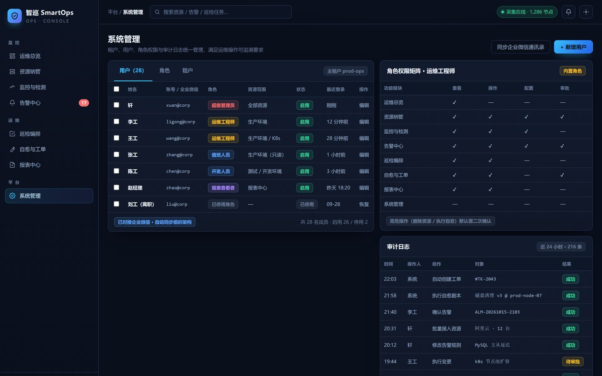
图 2-23 系统管理（用户、角色权限与审计日志）
系统数据类型可分为三类：以资源与配置为主的关系数据、以指标为主的时序数据、以及以报告与日志为主的文件与半结构化数据。关系数据使用 MySQL 承载，核心表设计如表 2-1 所示；时序指标写入 TDengine，按资源与指标建立超级表以提高聚合效率。
| 表名 | 关键字段 | 说明 |
|---|---|---|
| resource | id, name, type, endpoint, group_id, tags, health, probe_mode, created_at | 资源台账主表，tags 以 JSON 存储标签键值对，probe_mode 记录采集模式 |
| resource_group | id, parent_id, name, path, count | 资源分组树，path 保存层级路径便于范围匹配 |
| inspect_template | id, name, version, cron, concurrency, timeout, retry, scope, status | 巡检模板，scope 以 JSON 保存分组与标签匹配条件 |
| inspect_item | id, template_id, name, collect_type, expr, weight, level, required, sort | 检查项定义，expr 保存判定条件表达式 |
| inspect_flow | id, template_id, version, nodes, edges, status | DAG 流程定义，nodes/edges 以 JSON 保存拓扑 |
| inspect_result | id, task_id, resource_id, item_id, value, passed, cost_ms, ts | 巡检结果明细，按时序分区以支撑大表查询 |
| alert_rule | id, name, type, level, expr, scope, eval_cycle, agg_conf, notify_conf, status | 告警规则，expr 为触发条件表达式字符串 |
| alert | id, rule_id, resource_id, level, value, threshold, status, merged_count, owner, first_ts, last_ts | 告警主表，merged_count 记录聚合条数 |
| alert_event | id, alert_id, event_type, detail, operator, ts | 告警时间线事件，记录触发、聚合、通知、升级等动作 |
| playbook | id, name, trigger_conf, actions, safety_conf, status, success_cnt, total_cnt | 自愈剧本，actions 为动作序列 JSON |
| ticket | id, title, alert_id, level, status, owner, created_at, closed_at, sla_ok | 工单表，sla_ok 标记是否达成服务等级目标 |
| audit_log | id, operator, action, target, before, after, result, ts | 审计日志，before/after 记录变更前后值 |
表 2-1 核心关系表设计
系统对外提供 RESTful 风格接口，供前端与第三方系统调用；对内以消息队列解耦采集、检测与告警处理链路。主要接口如表 2-2 所示。
| 方法 | 路径 | 说明 |
|---|---|---|
| POST | /api/v1/resources | 新增资源接入，返回资源 ID 与连通性检测结果 |
| POST | /api/v1/resources/{id}/connectivity-test | 对指定资源执行连通性与探针通道检测 |
| POST | /api/v1/inspect/tasks | 按模板与资源范围创建巡检任务，返回任务 ID |
| POST | /api/v1/inspect/flows/{id}/validate | 校验 DAG 流程的语法、环路与变量作用域 |
| GET | /api/v1/metrics/series | 查询时序指标，支持聚合口径与时间范围参数 |
| POST | /api/v1/anomaly/detect | 按算法与灵敏度执行异常检测，返回异常点与评分 |
| POST | /api/v1/alert-rules/{id}/preview | 规则命中预演，返回预计触发频次与样例告警 |
| POST | /api/v1/alerts/{id}/ack | 确认告警并接管处理，写入时间线 |
| POST | /api/v1/alerts/{id}/to-ticket | 把告警转为人工工单，返回工单号 |
| POST | /api/v1/playbooks/{id}/dry-run | 自愈剧本干跑验证，不执行破坏性动作 |
| POST | /api/v1/reports/generate | 按报告任务生成报告，返回文件地址 |
表 2-2 主要系统接口
本设计以"让运维团队从人盯屏幕转向闭环治理"为目标，完成了智巡 SmartOps 平台的需求分析与系统设计。在需求层面，明确了四类用户角色、七类功能需求与五项非功能指标；在设计层面，给出了五层系统层次结构（H 图），逐模块完成功能需求描述、高保真界面原型与子模块 IPO 图，并补充了核心数据结构与接口设计。
本设计的三点取舍值得说明：其一，坚持"先跑通再优化"，原型全部以 HTML 实现并真实渲染，而非停留在示意图层面，保证设计可被直接验证；其二，在告警处理上把"聚合抑制"与"原始记录保留"同时作为约束，宁可多存一份原始数据，也不允许降噪过程不可追溯；其三，在自愈能力上设置安全阈值与干跑机制，承认自动化存在边界，把无法自动化的部分交给工单流程而不是强上自动执行。
后续可扩展的方向包括：引入调用链数据把根因推荐从"相关性"推进到"因果推断"；把自愈剧本的触发条件与变更管理系统联动，实现变更期间的自动豁免；以及在报告中引入成本维度，让运维决策能够兼顾稳定性与资源投入。